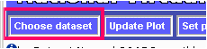

Introduction to LAS version 7 User Interface
The v7.0 UI: a transitional step
The v7.0 user interface, released as an Alpha product herein together with the Armstrong package, is a transitional step. The v7.0 UI incorporates new and more flexible programming paradigms (e.g. Ajax), while retaining major elements of the style of user interactions found in v6. For example the v7.0 UI has retained the characteristics of the LAS v6 UI that require the user to understand the abstraction of a "VIEW" (e.g. select from lat-long, lat-depth, depth-time, ...). With the release of v7.1 support for the v6/Armstrong UI will be dropped altogether (though the XML configuration files will be backward compatible to the greatest degree that is feasible). Significant advances will be incorporated in how the user will interact with the UI. The improvements to the UI are a work in progress at the present time. Suggestions and discussion are welcome at las_users@noaa.gov
In this initial release, the V7 UI is not quite as fully functional as is the V6 LAS user interface. For this reason, we have included a "Use Classic LAS" link on the right side of the V7 UI banner.
This link will take the user to the V6 UI so that the user may
LAS v7 UI layout
Getting a product from LAS
Example: Create a 2D xy color plot of Sea Surface Temperature from the coads climatology dataset.
Step 1: Select the Coads climatology dataset:

Click on the "Choose Dataset" button:

The Dataset selection tree will open. Click on "Coads monthly climatology" and select "Air temperature":

LAS will then set the dataset to Coads climatology, select the Air temperature variable and will create a Latitude-Longitude map by default:
In the LAS V7 user interface, the output products are interactive. This means that the user can click and drag to zoom into a particular region on the map. The user is now free to begin interactive with LAS. For example, clicking "Time Series" on the left side of the interface will result in this:

Changing the options for a product
Example: How to modify the default values LAS uses to create a product.
In this example, we will change the specified color pallete for our AIRT plot, as well as eliminate the graticule lines. First, to change the output size of the plot, click the "Set plot options" button from the menu toolbar, as shown below:
This will open up a menu from which the user may change several options for plot creation. In the below - we have turned off the graticules option as well as selecting a different pallet:

After making the changes, and clicking on the "Close" button, the "Update plot" button will have changed color in the upper menu bar, like so:
When the "Update Plot" button is orange like above, it means that the current image is out of sync with something in the user interface. In this example, it is because the plot options have changed, but it could also happen if a different variable was selected, or a different time range was chosen, etc.
In our example, after changing the plot options, clicking the "Update Plot" button results in the below plot. Notice that the graticule lines are no longer covering the image, and the palette is slightly different.

There are many other options that the user can play with, and it's important to note that these options can be "view" specific or possibly even dataset specific.